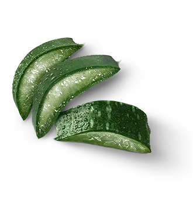
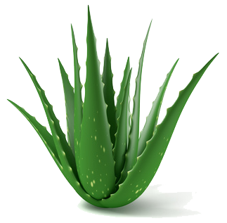
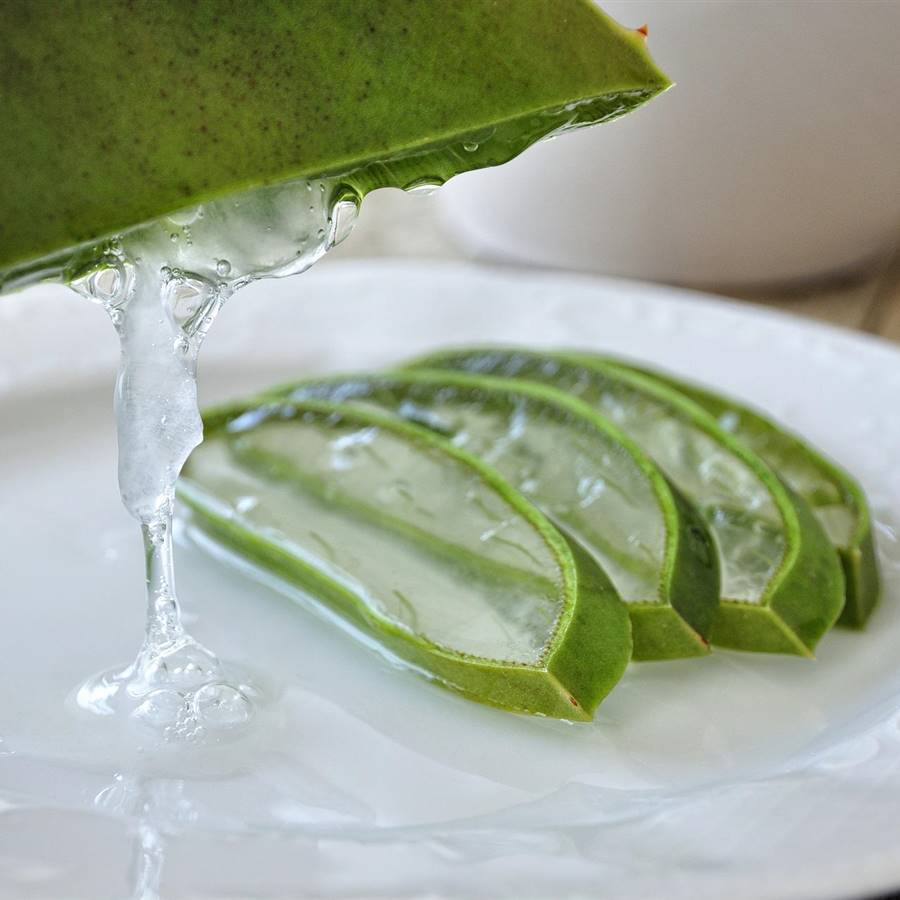
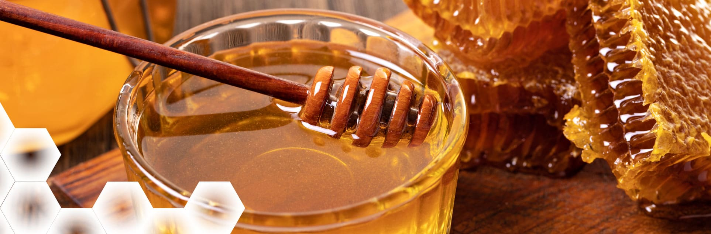

¡LIBERA TU ROSTRO, CONQUISTA EL MUNDO!
 ACNOGEL
es un gel hecho principalmente a base de aloe vera (sábila), esta tiene muchas propiedades que ayudan a reducir la inflamación del acné. Este puede calmar la piel irritada y la hinchazón, paralelo a este también tiene propiedades antibacterianas, contribuye a combatir bacterias, evitar la proliferación de estas y reducir la incidencia de brotes.

¿QUE BENEFICIOS TIENE EL USAR ACNOGEL?
- Propiedades Antibacterianas: La miel de abeja y el aloe vera tienen propiedades antibacterianas que ayudan a eliminar las bacterias causantes del acné.
- Reducción de la Inflamación: La manzanilla y el aloe vera tienen propiedades antiinflamatorias que ayudan a reducir la inflamación y el enrojecimiento asociados con el acné.
- Hidratación sin Obstruir los Poros: El aloe vera y la miel de abeja hidratan la piel sin obstruir los poros, lo que es crucial para prevenir brotes de acné.
- Regeneración Celular: La vitamina E y el aloe vera promueven la regeneración celular, ayudando a sanar las cicatrices del acné y mejorar la textura de la piel.
- Propiedades Antioxidantes: La vitamina E y la miel de abeja contienen antioxidantes que protegen la piel del daño causado por los radicales libres, ayudando a mantener una piel saludable y libre de acné.
¿QUE INGREDIENTES CONTIENE ACNOGEL?
-

Aloe Vera
Principios activos: Aloína, ácido salicílico, vitaminas A, C y E
Propiedades: Antiinflamatorio, antibacteriano, hidratante
Ayuda contra el acné: Reduce la inflamación, calma la piel irritada, ayuda a cicatrizar Ver más
-
Manzanilla
Principios activos: Alfa-bisabolol, camazuleno
Propiedades: Antiinflamatorio, calmante, antiséptico
Ayuda contra el acné: Reduce el enrojecimiento, calma la piel irritada, combate bacterias Ver más
-

Miel de abeja
Principios activos: Peróxido de hidrógeno, flavonoides
Propiedades: Antibacteriano, humectante, antioxidante
Ayuda contra el acné: Combate bacterias, hidrata la piel, promueve la cicatrización Ver más
-

Vitamina E
Principio activo: Tocoferol
Propiedades: Antioxidante, hidratante, regenerador celular
Ayuda contra el acné: Protege la piel del daño oxidativo, ayuda a reducir cicatrices, mejora la textura de la piel Ver más
Comunicate con Nosotros
Preguntas Frecuentes
¿Es apto para todo tipo de piel?
Si, pero es recomendable que primero haga la prueba en el antebrazo, para descartar posibles alergias.
¿Cuánto dura el producto una vez abierto?
Una vez abierto, el producto tiene una duración de 7 días a más si se mantiene en la refrigeradora.